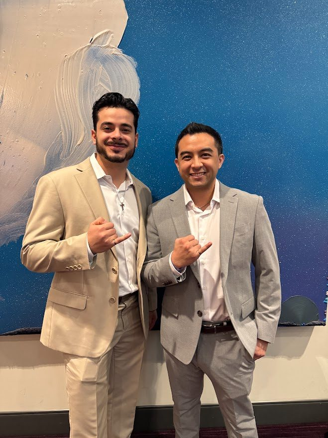

Dante Rieger
Engineering that holds up beyond the drawing board.
At Lincoln Electric, I helped bring two new welders into production. Along the way, I reorganized assembly areas with 5S and lean manufacturing so they ran safer and smoother. I design and test parts in CAD, and today I lead software implementations at QBuild that keep engineering and production working from the same bill of materials.
See my projectsWhat I do
-
Product implementation
Bring new products into production
Electrical schematics, BOMs and technical documentation for the Vantage 500 and Maverick 300X launches at Lincoln Electric, for a smooth hand-off to production and fewer operator errors.
-
Manufacturing
Make production lines run better
Led floor layout optimization with 5S, lean and kaizen methods, including the Machine Division assembly line and a safer cored wire payoff area.
-
Mechanical design
Design parts that can be made
Parts, fixtures and production drawings in Solid Edge and AutoCAD, and a 3D-printed lattice damper designed in nTop and load-tested in the lab.
-
Project management
Run engineering projects
At QBuild, I lead software implementations from scoping to go-live, connecting CAD systems to ERP. Before that, I coordinated schedules, budgets and crews on construction projects.
- Solid Edge
- AutoCAD
- SolidWorks
- nTop
- GD&T
- Python
- Arduino
- BOMs and schematics
- 5S
- Lean manufacturing
- Kaizen
- Six Sigma
- Tensile testing
- 3D printing
- CAD to ERP integration
- Project scheduling
Project management
One bill of materials, from design to production
Engineering and production often work from different copies of the same product. At QBuild I lead implementations of CADLink, which connects CAD systems to a manufacturer’s ERP so the parts and BOMs engineering releases are the ones production builds. I take each project from the handoff from sales through scoping and solution design to go-live.
- Scoping requirements and presenting solutions to customers
- Quotations, proposals and scope changes
- Engineering workflow reviews and best-practice recommendations
Manufacturing
Products launched, lines rebuilt
A year on Lincoln Electric’s welding equipment production floor: taking new products from BOMs and schematics into production, and reorganizing work areas with 5S, lean and kaizen so they run safer and with fewer bottlenecks.
- Vantage 500 and Maverick 300X product launches
- Machine Division assembly line reorganization
- Cored wire payoff area redesign for safety and crane access
From drawing to production floor
- Schematics and BOMsElectrical schematics and bills of materials for each new model
- DocumentationTechnical documents written to cut operator errors on the line
- LaunchVantage 500 and Maverick 300X released into production
Mechanical design
A lattice damper for drone motors
Drone motors shake the whole aircraft. Our team designed and simulated five lattice families for a 3D-printed damper that sits between the motor and the arm, stopping vibration at its source.
- 72%less vibration passed on than a basic truss lattice, in simulation
- 383 Nheld by the TPU prototype in tensile testing
All projects
Browse by sector- Lattice damper for drone motorsMechanical design, research2026
- Launching two welder productsProduct implementation2025–26
- Reorganizing an assembly lineManufacturing, lean2025–26
- Safer cored wire payoff areaManufacturing2025–26
- Smart curtain, light-controlled automationElectrical & controls2025
- Coordinating construction crewsProject management2024
- Wind turbine tower vibration absorberMechanical design, simulation2024
- Dynamic Rescuer, all-terrain patient carrierMechanical design2023
Experience
-
Nov 2026 to now
Project Manager, Engineering & Software Integration
QBuild Software, Markham
Managing projects for CADLink and related tools that connect CAD, PDM and PLM systems to ERP, keeping engineering BOMs and business data in sync in both directions.
- Lead implementations from the handoff from sales through scoping, delivery and go-live, as the customer’s main project consultant.
- Scope requirements with manufacturing customers, present solutions, and prepare quotations, proposals and scope changes.
- Work with our software engineers to choose the best technical solution, or design new enhancements when a customer needs one.
- Review customers’ engineering workflows and recommend best practices, as a subject-matter expert for clients and technology partners.
-
Aug 2025 to Aug 2026
Engineering Intern
Lincoln Electric, Toronto
- Led floor layout optimization using 5S, lean manufacturing and kaizen, reducing production bottlenecks.
- Drove new product implementation for the Vantage 500 and Maverick 300X with electrical schematics, BOMs and technical documentation.
- Designed parts, fixtures and production drawings in Solid Edge and AutoCAD.
- Worked with engineers, technicians and assemblers on the Machine Division line and cored wire payoff reorganizations.
-
Apr to Sep 2024
Construction Project Coordinator
Maverick Carpentry, Toronto
Kept construction projects supplied, scheduled and on track, working between the crew on site and the people running the jobs.
- Coordinated the planning, scheduling and delivery of products to each project.
- Managed procurement of materials and tools, so they were on site when needed and within budget.
- Acted as the main point of contact between crew, supervisors and management, keeping communication clear and work in line with project timelines and safety protocols.
Education
Bachelor of Engineering (Honours), Mechatronics
Toronto Metropolitan University, formerly Ryerson University
Where the foundation was set: mechanics, electronics, controls and programming.
Like Canadian engineers before me, I wear the Iron Ring, a daily reminder of the obligation to public safety and to doing the job right.

Certifications
CAD & design 2
- Solid Edge Mechanical, Professional LevelSiemens, 2026
- Solid Edge Mechanical, Associate LevelSiemens, 2026
Six Sigma 1
- Six Sigma Grey BeltLincoln Electric continuous improvement program, 2025
AI & automation 5
- Claude Code 101Anthropic, 2026, verified credential
- Introduction to Claude CoworkAnthropic, 2026, verified credential
- Claude 101Anthropic, 2026, verified credential
- AI Fluency: Framework and FoundationsAnthropic, 2026, verified credential
- AI Fluency for NonprofitsAnthropic, 2026, verified credential
Health & safety 1
- Working at HeightsCarpenters’ Regional Council, 2024, valid to 2028
Get in touch
Open to conversations about manufacturing, product development and engineering projects.